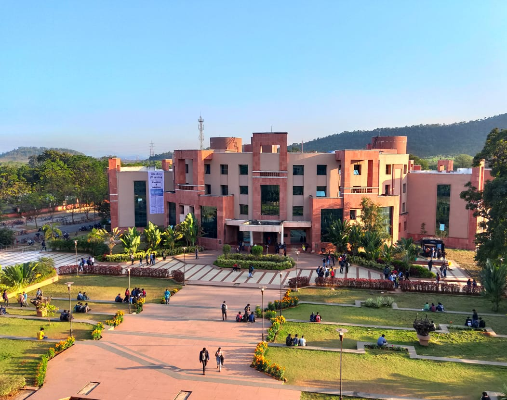
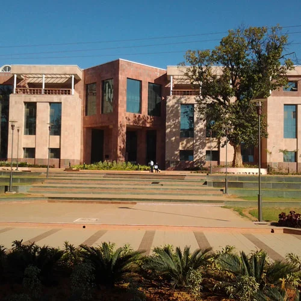
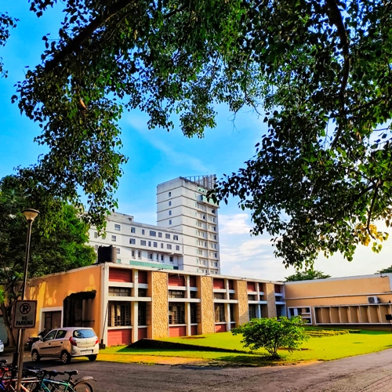
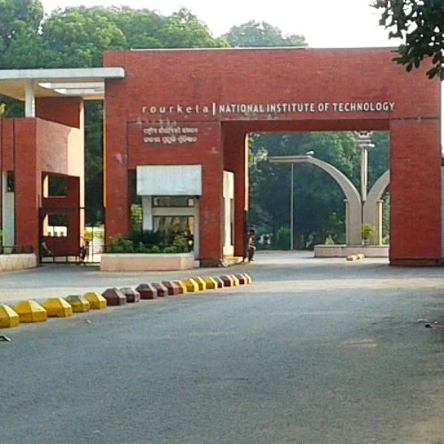
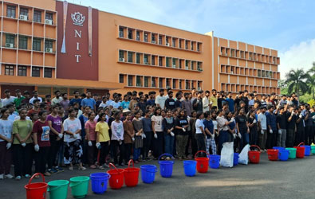
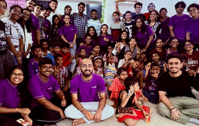
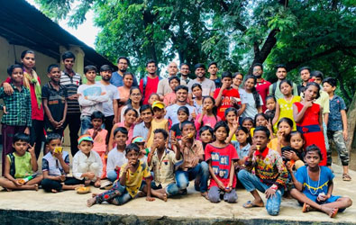

Placements
NIT Rourkela received 1,340 offers in 2025–26 Placement Drive
A record placement season: 1,340 offers from top recruiters across core engineering, IT, consulting and analytics.
National Institute of Technology Rourkela
राष्ट्रीय प्रौद्योगिकी संस्थान राउरकेला
ଜାତୀୟ ପ୍ରଯୁକ୍ତି ପ୍ରତିଷ୍ଠାନ ରାଉରକେଲା





Elevated from Regional Engineering College, Rourkela to a premier national university, producing world-class engineers, scientists, and leaders across 20 specialized departments.
To become an internationally acclaimed institution of higher learning serving as a source of knowledge and expertise, and a preferred destination for undergraduate and graduate studies.

To advance and spread knowledge in science and technology leading to the creation of wealth and welfare of humanity, powered by Industry 4.0 learning frameworks and cutting-edge research.

Director • National Institute of Technology Rourkela
“With sixty dedicated years of service to the nation, NIT Rourkela stands as a global beacon of academic rigor, research excellence, and sustainable innovation.”
It is a privilege for me to serve as Director of NIT Rourkela. Our institution is built upon strong foundational pillars of teaching excellence, cutting-edge translational research, and dedicated service to the nation. We cultivate visionary engineers, scientists, and entrepreneurs ready to lead in an increasingly complex and interconnected world.
As we navigate the transformative demands of Industry 4.0 and emerging computational disciplines, our focus remains firmly on interdisciplinary learning, fostering world-class incubation, and creating sustainable technological wealth and welfare for all humanity.
A record placement season: 1,340 offers from top recruiters across core engineering, IT, consulting and analytics.
Faculty members have secured over ₹8.50 Crore in prestigious Advanced Research Grants from the Anusandhan National Research Foundation (ANRF), driving cutting-edge translational investigations across engineering and physical sciences.
Admission to undergraduate courses is made in the autumn semester at the first-year level through JEE (Main) or similar test approved by NIT Council, the counselling for which is done by Joint Seat Allocation Authority (JoSAA) and Central Seat Allocation Board (CSAB) or its equivalent approved by the NIT Council and/or Central Government. Besides, a specified number of foreign nationals selected under the policy of the Government of India may be admitted directly to the 1st-year of any of the programmes.
The courses leading to M. Tech. degree are open to candidates who have obtained the requisite qualification with 60% marks or 6.50 CGPA in aggregate in the qualifying examination. Admission for the GATE qualified candidates is made through Common Admission Process called Central Counselling for Master’s of Technology (CCMT). Relaxation up to 5% of marks or 0.5 CGPA is allowed by senate for sponsored candidates with proven research or profession experience.
For admission to M. Sc., candidates must have required B. Sc. degree with the subject applied for as one of the subjects (either Pass or Honours), Mathematics in +2 levels is compulsory for all courses except Life Science. The admission to the above programmes is made through Centralized Counselling for M.Sc.
The requisite academic qualification for MA in Development Studies is B. Tech. / B. A. / B. Sc. / B. Com. with 55% marks or 6.00 CGPA. Amongst B. A. / B. Sc. / B. Com. applicants with honours are given preference. Admission to the programme is made on the basis of career marks.
Minimum eligibility criterion for admission to MBA is any Graduate with 60% or 6.5 CGPA (on 10-point scale) and 55% or 6.0 CGPA in case of SC/ST candidates. Applicants who have qualified at national/international tests for admission to business schools with high scores get preference. Final selection is based on group discussion and personal interview conducted at the Institute, along with academic career and score of national or international tests.
A few departments offer M.Tech by research. This course don’t have a time bound and the course work will be decided by the Masters Scrutiny Committee (MSC). This course requires a submission of original research in form of a thesis..The minimum qualification required for admission to the program is one of the following.
The institute offers various research centric courses in various departments/ Centers like Post Doc, PhD, M.Tech. research under various schemes with fellowship like DST Inspire, Visvesvaraya PhD Scheme for Electronics and IT, and sponsored programs like QIP and self-financed.
The Institute provides facilities for research leading to the Degree of Doctor of Philosophy (PhD) in Engineering, Science, Management, Planning and Architecture, Humanities and Social Sciences in various disciplines. Candidates except the members of the Institute faculty, QIP scholars and scholars nominated by the Central Government have to be selected by Departmental Research Committee (DRC) on the basis of their academic background, performance in written test and/or interview.
NIT Rourkela has opened its doors for working professionals by offering programmes which are designed to enable them to pursue their doctorate degree while continuing in their Job/Profession in order to help them to accelerate their career. Candidates with minimum eligibility criteria as per NIT guidelines can apply and they will be selected based upon their academic background, performance in written test and/or interview.
NIT Rourkela has opened its doors for working professionals. These programmes are designed to enable them to pursue higher study while continuing in their Job/Profession in order to help them to accelerate their career.

Department
Students

Faculty

Staff
A walk through NIT Rourkela, from the main gateway and academic quadrangles to the lakeside residences.

Main entrance gateway

Social Initiatives
National Service Scheme (NSS)
Guided by the motto “Not Me, But You,” NSS NIT Rourkela instills selfless service, civic leadership, and social responsibility. Student volunteers lead extensive cleanliness drives, mass tree plantation campaigns, voluntary blood donation camps, and rural welfare awareness programs fostering sustainable development.
Discover NSS Initiatives

The Rotaract Club
The Rotaract Club at NIT Rourkela fosters grassroots community and international service while nurturing leadership among youth. Its flagship initiative, SaPNA (Sanitary Pads & Awareness), spreads menstrual hygiene education and distributes sanitary kits across rural schools, alongside vital blood donation and community welfare programs.
Read ROTA MagazineAASRA
AASRA is an impassioned student-led social service club focused on education and child development. Through regular evening tutoring sessions, digital literacy classes, and sports mentorship, AASRA bridges learning gaps among underprivileged children, fostering compassion, hope, and academic ambition in the community.
Learn About AASRA
Unnat Bharat Abhiyan (UBA)
Unnat Bharat Abhiyan transforms rural livelihoods by channeling the technological and scientific expertise of NIT Rourkela into village communities. Through sustainable energy solutions, clean water initiatives, agricultural modernization, and skill workshops, UBA empowers villages toward economic self-reliance.
Explore UBA Portal